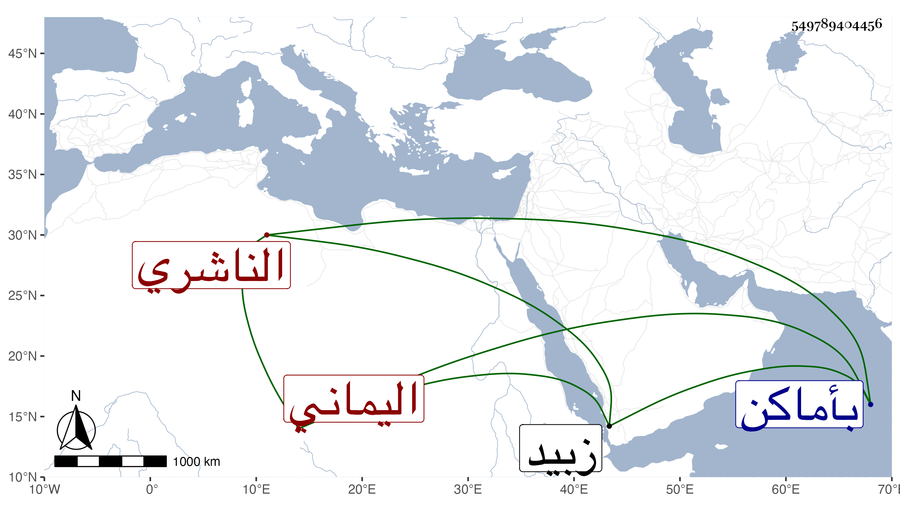

0902Sakhawi.DawLamic.ITO20230111-ara1.EIS1600.549789404456
Biography ID: 549789404456
47
عبد الله بن إسماعيل بن عبد الله بن عمر بن أبي بكر بن عمر بن عبد الرحمن بن عبد الله أبو محمد الناشري اليماني . حفظ التنبيه وأخذ عن عميه القاضيين محمد بن عبد الله والشهاب أحمد بن أبي بكر وغيرهما ، وكان فقيها عالما غاية في الحفظ يحفظ من مرة وولي القضاء بأماكن مع كثرة العبادة والتلاوة واستعمال الأوراد والأذكار وكونه حلو النادرة مليح المحاورة حديد السمع جدا عطر الرائحة ولو لم يتطيب كثير الخشوع . مات بعد أن كف بمدينة زبيد في جمادى الأولى سنة اثنتين وثلاثين .
